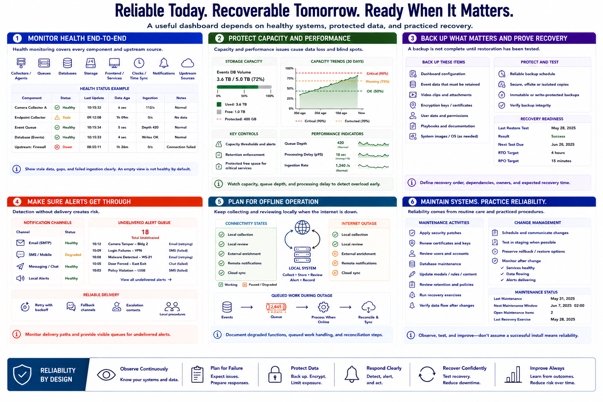

Reliability and Operations
Connecting to LMS... Progress: in progress

Narration
A dashboard is useful only when its data and services are dependable. Health monitoring should cover collectors, queues, databases, storage, frontend services, clocks, notification channels, and upstream sources. Show stale data and failed ingestion clearly rather than presenting an apparently normal empty view.
Track disk capacity before storage fills. Video and verbose logs can grow rapidly, and a full disk may stop ingestion or damage databases. Use capacity thresholds, retention enforcement, and protected free space for critical services. Monitor queue depth and processing delay to detect overload.
Back up configuration, event data that must be retained, encryption material where appropriate, and documentation needed for recovery. A backup is not complete until restoration has been tested. Define recovery order, dependencies, responsible owners, and expected recovery time.
Alert delivery can fail even when detection succeeds. Monitor email, messaging, mobile, or local notification paths and provide a visible queue for undelivered alerts. Important workflows need fallback contacts or local procedures instead of assuming one channel will always work.
Plan for offline operation. Local collection and review may continue during an internet outage, while external enrichment and remote notifications pause. Document which functions degrade, how queued work is handled, and how the system reconciles after connectivity returns.
Maintenance includes patching, certificate renewal, account review, database care, model or rule updates, and periodic recovery exercises. Schedule changes, preserve rollback options, and verify that data still flows after updates. Reliability is built through routine observation and practiced procedures, not assumed from a successful installation.